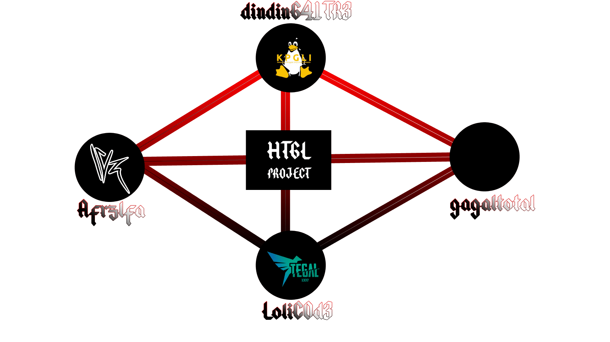

Organisasi
Pendiri mengatakan
"Kami ada dan berkembang karena kami memiliki kesamaan di bidang sumber terbuka. Awalnya hadir sebagai tim dalam pengembangan distribusi <<Hack|Track GNU/Linux spark plug. Kami tumbuh dan berkembang, dan kini kami fokus pada Proyek HTGL. Nama organisasi kami tidak dikenal karena kami bergabung dari basis komunitas kami masing-masing. Secara lebih tepat, kami adalah sekelompok orang yang mengembangkan proyek perangkat lunak sumber terbuka."
Rekan Pendiri mengatakan
"HTGL bukanlah sebuah organisasi, melainkan sebuah produk yang dibentuk dari 4 pilar organisasi."
2017
dindinG41TR3 - Afrzlfa - Lolic0d3 - gagaltotal - littleshadow
Sejak
Anggota
"SEMOGA INI BERMANFAAT DAN BERPIKIR POSITIF."
Artinya, selamat telah mencapai tujuan Anda dan semoga impian Anda menjadi kenyataan. Terus berpikir positif dalam mencapai tujuan Anda. Semoga sukses & tetap berpikir positif.
Arti
STRUKTUR "TIM PENGEMBANG" PROYEK HTGL
██╗░░██╗████████╗░██████╗░██╗░░░░░
██║░░██║╚══██╔══╝██╔════╝░██║░░░░░
███████║░░░██║░░░██║░░██╗░██║░░░░░
██╔══██║░░░██║░░░██║░░╚██╗██║░░░░░
██║░░██║░░░██║░░░╚██████╔╝███████╗
╚═╝░░╚═╝░░░╚═╝░░░░╚═════╝░╚══════╝
P R O J E C T
Website : https://www.hacktrack-linux.org/ E-Mail:
redlovereturn@yahoo.com
_____________________________________________________________________________________
dindinG41TR3 {Founder}
Afrzlfa {Co-Founder}
LoliC0d3 {UI/UX Designer}
gagaltotal {Software Enginer}
littleshadow {Front-End Web Designer}
Sumber pendanaan Proyek HTGL berasal dari sponsor, donor, dan insentif distribusi produk. Pendanaan ini ditujukan untuk pengembangan dan pembiayaan proyek.
Untuk mengajukan Sponsorship atau Donasi, hubungi kami melalui email: redlovereturn@yahoo.com.
Hosting Sudah Tidak Berlangganan Hosting
Domain Pembayaran
2025-2026 hacktrack-linux.org [Sudah Dibayar]
Domain Pembayaran
2026-2027 hacktrack-linux.org [Belum Dibayar]
Hosting
Pembayaran Jan 2023 untuk cdimage.hacktracklinux.org oleh Permata Software [Dibayar]
Hosting
Pembayaran Des 2022 untuk cdimage.hacktracklinux.org oleh Permata Software [Dibayar]
Hosting
Pembayaran Nov 2022 untuk cdimage.hacktracklinux.org oleh Permata Software [Dibayar]
Hosting
Pembayaran Okt 2022 untuk cdimage.hacktracklinux.org oleh Permata Software [Dibayar]
Hosting
Pembayaran Sep 2022 untuk cdimage.hacktracklinux.org oleh Permata Software [Dibayar]
Domain
Pembayaran 2022-2023 hacktracklinux.org oleh dindinG41TR3, Afrzlfa, LoliC0d3 and
gagaltotal [Dibayar]
Domain
Pembayaran 2025-2026 hacktrack-linux.org oleh LoliC0d3 [Dibayar]
Untuk mengajukan Sponsorship atau Donasi, hubungi kami melalui email: redlovereturn@yahoo.com.
Peluang pendanaan saat ini
Sejarah penggunaan dana keluar
 Dilaporkan oleh media https://www.linuxsec.org
https://www.linuxsec.org/2017/06/hacktrack-linux.html
Diposting oleh Problem Child pada Selasa, 13 Juni 2017 Anggota; dindinG41TR3 dan Afrzlfa
2018 'Proyek HackTrack menghilang'
Proyek HackTrack dihentikan, meninggalkan repositori GitHub organisasi. Di https://github.com/hacktracklinux. Domain http://www.hacktrack-linux.org/
Dilaporkan oleh media https://www.linuxsec.org
https://www.linuxsec.org/2017/06/hacktrack-linux.html
Diposting oleh Problem Child pada Selasa, 13 Juni 2017 Anggota; dindinG41TR3 dan Afrzlfa
2018 'Proyek HackTrack menghilang'
Proyek HackTrack dihentikan, meninggalkan repositori GitHub organisasi. Di https://github.com/hacktracklinux. Domain http://www.hacktrack-linux.org/
 Anggota ; dindinG41TR3, Afrzlfa, LoliC0d3, Lucifer07
2019 'Domain mati dan status proyek tidak aktif'
Selama tahun 2019 hingga 2020, proyek terhenti dan domain untuk http://www.hacktrack-linux.org/ tidak aktif, serta akses ke akun GitHub pendiri hilang.
Anggota ; dindinG41TR3, Afrzlfa, LoliC0d3
2020 'Kelahiran Kembali dan Forking Proyek HackTrack'
Berita tentang proyek HackTrack diliput oleh media Tegal1337.
Anggota ; dindinG41TR3, Afrzlfa, LoliC0d3, Lucifer07
2019 'Domain mati dan status proyek tidak aktif'
Selama tahun 2019 hingga 2020, proyek terhenti dan domain untuk http://www.hacktrack-linux.org/ tidak aktif, serta akses ke akun GitHub pendiri hilang.
Anggota ; dindinG41TR3, Afrzlfa, LoliC0d3
2020 'Kelahiran Kembali dan Forking Proyek HackTrack'
Berita tentang proyek HackTrack diliput oleh media Tegal1337.
 Domain sementara dapat ditemukan di https://hacktrack-linux.blogspot.com/ dan repositori GitHub dari organisasi baru yang telah melakukan forking terhadap semua proyek repositori lama tersedia di https://github.com/hacktrackgnulinux.
Domain sementara dapat ditemukan di https://hacktrack-linux.blogspot.com/ dan repositori GitHub dari organisasi baru yang telah melakukan forking terhadap semua proyek repositori lama tersedia di https://github.com/hacktrackgnulinux.
 Anggota ; dindinG41TR3, Afrzlfa, LoliC0d3
2021 'Pendirian Proyek HTGL'
Tentang Proyek HTGL adalah sebagai berikut:
Pendiri mengatakan;
"Kami ada dan berkembang karena kami memiliki kesamaan di bidang sumber terbuka. Awalnya hadir sebagai tim dalam pengembangan distribusi <<Hack|Track GNU/Linux spark plug. Kami tumbuh dan berkembang, dan kini kami fokus pada Proyek HTGL. Nama organisasi kami tidak dikenal karena kami bergabung dari basis komunitas kami masing-masing. Secara lebih tepat, kami adalah sekelompok orang yang mengembangkan proyek perangkat lunak sumber terbuka."
Rekan Pendiri mengatakan;
"HTGL bukanlah sebuah organisasi, melainkan sebuah produk yang dibentuk dari 4 pilar organisasi."
Anggota ; dindinG41TR3, Afrzlfa, LoliC0d3
2021 'Pendirian Proyek HTGL'
Tentang Proyek HTGL adalah sebagai berikut:
Pendiri mengatakan;
"Kami ada dan berkembang karena kami memiliki kesamaan di bidang sumber terbuka. Awalnya hadir sebagai tim dalam pengembangan distribusi <<Hack|Track GNU/Linux spark plug. Kami tumbuh dan berkembang, dan kini kami fokus pada Proyek HTGL. Nama organisasi kami tidak dikenal karena kami bergabung dari basis komunitas kami masing-masing. Secara lebih tepat, kami adalah sekelompok orang yang mengembangkan proyek perangkat lunak sumber terbuka."
Rekan Pendiri mengatakan;
"HTGL bukanlah sebuah organisasi, melainkan sebuah produk yang dibentuk dari 4 pilar organisasi."
 Situs web dan domain baru di https://www.hacktracklinux.org/
Anggota ; dindinG41TR3, Afrzlfa, LoliC0d3, gagaltotal
2022 'Jalan menuju Rilis [Release Candidate]'
Release Candidate adalah sebuah cdimage yang berupa file .iso yang dibuat setiap minggu dengan pembaruan terbaru setiap akhir pekan. Akan ada Rilis Final yang disebut RF (Release Fixed).
Membangun distro memerlukan pengujian pada berbagai perangkat keras. Dibutuhkan seorang penguji dalam pengembangan distro ini untuk membuatnya lebih baik. Oleh karena itu, kami dari TIM HTGL Project merilis RC ini agar teman-teman lain dapat bergabung dalam mengembangkan distribusi ini.
Situs web dan domain baru di https://www.hacktracklinux.org/
Anggota ; dindinG41TR3, Afrzlfa, LoliC0d3, gagaltotal
2022 'Jalan menuju Rilis [Release Candidate]'
Release Candidate adalah sebuah cdimage yang berupa file .iso yang dibuat setiap minggu dengan pembaruan terbaru setiap akhir pekan. Akan ada Rilis Final yang disebut RF (Release Fixed).
Membangun distro memerlukan pengujian pada berbagai perangkat keras. Dibutuhkan seorang penguji dalam pengembangan distro ini untuk membuatnya lebih baik. Oleh karena itu, kami dari TIM HTGL Project merilis RC ini agar teman-teman lain dapat bergabung dalam mengembangkan distribusi ini.
 Anggota ; dindinG41TR3, Afrzlfa, LoliC0d3, gagaltotal
2023 '[UPDATE] Jalan menuju Rilis
[Release Candidate]'
RC adalah cdimage dalam bentuk file .iso yang dibuat pada akhir setiap bulan dan diunggah dengan pembaruan baru yang sudah dipaketkan. Akan ada Final Release yang disebut RF (Fixed Release) pada akhir setiap tahun.
Membangun distribusi memerlukan pengujian pada berbagai perangkat keras. Diperlukan seorang penguji dalam pengembangan distribusi ini untuk membuatnya lebih baik. Oleh karena itu, kami dari TIM HTGL Project merilis RC ini agar teman-teman lain dapat bergabung dalam mengembangkan distribusi ini.
Proyek arsip backend ISO Master dipindahkan dari GitHub ke SourceForge.
Anggota ; dindinG41TR3, Afrzlfa, LoliC0d3, gagaltotal
2023 '[UPDATE] Jalan menuju Rilis
[Release Candidate]'
RC adalah cdimage dalam bentuk file .iso yang dibuat pada akhir setiap bulan dan diunggah dengan pembaruan baru yang sudah dipaketkan. Akan ada Final Release yang disebut RF (Fixed Release) pada akhir setiap tahun.
Membangun distribusi memerlukan pengujian pada berbagai perangkat keras. Diperlukan seorang penguji dalam pengembangan distribusi ini untuk membuatnya lebih baik. Oleh karena itu, kami dari TIM HTGL Project merilis RC ini agar teman-teman lain dapat bergabung dalam mengembangkan distribusi ini.
Proyek arsip backend ISO Master dipindahkan dari GitHub ke SourceForge.
 Anggota ; dindinG41TR3, Afrzlfa, LoliC0d3, gagaltotal
2025 'Proyek tersebut dilanjutkan kembali pada akhir tahun 2025.'
Proyek tersebut dilanjutkan pada akhir tahun 2025, dengan domain lama diaktifkan kembali.
Anggota ; dindinG41TR3, Afrzlfa, LoliC0d3, gagaltotal
2025 'Proyek tersebut dilanjutkan kembali pada akhir tahun 2025.'
Proyek tersebut dilanjutkan pada akhir tahun 2025, dengan domain lama diaktifkan kembali.

Distribusi
Nama Hack|Track GNU/Linux terinspirasi dari proyek Back|Track GNU/Linux. Kami tidak bermaksud untuk melanggar hak cipta atau menjiplak nama tersebut.
Tujuan kami adalah untuk mendapatkan inspirasi dari proyek tersebut. Perbedaannya adalah kami hanya fokus pada lingkungan desktop Mate sebagai desktop utama, dengan alat manajemen umum, dan menyediakan produk-produk resmi.
Linux® adalah merek dagang terdaftar milik Linus Torvalds di AS dan negara-negara lain.
Tujuan kami adalah untuk mendapatkan inspirasi dari proyek tersebut. Perbedaannya adalah kami hanya fokus pada lingkungan desktop Mate sebagai desktop utama, dengan alat manajemen umum, dan menyediakan produk-produk resmi.
 Maskot kami adalah gambar imajinatif yang terinspirasi oleh legenda Quetzalcoatl dari suku Maia.
Quetzalcoatl, salah satu dewa utama dari peradaban pra-Hispanik, hadir di sebagian besar wilayah Mesoamerika pada abad ke-15. Sejak awal, ia telah dikaitkan dengan berbagai misteri: ia dianggap sebagai manusia, dewa, imam, mitos, atau legenda.
Maskot kami adalah gambar imajinatif yang terinspirasi oleh legenda Quetzalcoatl dari suku Maia.
Quetzalcoatl, salah satu dewa utama dari peradaban pra-Hispanik, hadir di sebagian besar wilayah Mesoamerika pada abad ke-15. Sejak awal, ia telah dikaitkan dengan berbagai misteri: ia dianggap sebagai manusia, dewa, imam, mitos, atau legenda.
 Asal nama Quetzalcoatl berasal dari bahasa Nahuatl, yang terdiri dari dua kata: "Quetzal", yang berarti burung dengan bulu yang indah, dan "Coatl", yang berarti ular, menghasilkan sebutan yang dikenal sebagai "Ular Bulu".
Dewa ini adalah salah satu yang paling populer dalam tradisi Hispanik, yang merujuk pada penyatuan air tanah dan air hujan, yang sangat penting bagi kelangsungan hidup masyarakat agraris, sehingga melambangkan asal mula kehidupan itu sendiri.
Maskot ini dirancang oleh pendiri proyek. Maskot tersebut kemudian diubah menjadi file SVG oleh kontributor eksternal bernama munskyson.
Sejarah Referensi
- https://www.inside-mexico.com/the-many-faces-of-quetzalcoatl
- https://en.wikipedia.org/wiki/Quetzalcoatl
Asal nama Quetzalcoatl berasal dari bahasa Nahuatl, yang terdiri dari dua kata: "Quetzal", yang berarti burung dengan bulu yang indah, dan "Coatl", yang berarti ular, menghasilkan sebutan yang dikenal sebagai "Ular Bulu".
Dewa ini adalah salah satu yang paling populer dalam tradisi Hispanik, yang merujuk pada penyatuan air tanah dan air hujan, yang sangat penting bagi kelangsungan hidup masyarakat agraris, sehingga melambangkan asal mula kehidupan itu sendiri.
Maskot ini dirancang oleh pendiri proyek. Maskot tersebut kemudian diubah menjadi file SVG oleh kontributor eksternal bernama munskyson.
Sejarah Referensi
- https://www.inside-mexico.com/the-many-faces-of-quetzalcoatl
- https://en.wikipedia.org/wiki/Quetzalcoatl